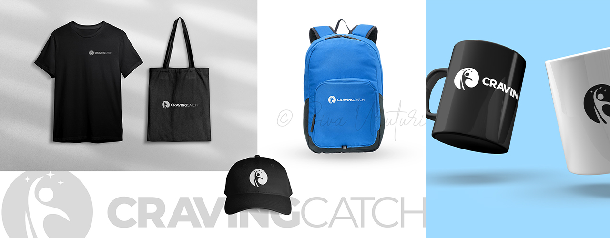

Craving Catch-Branding
Craving Catch is a new-age food brand focused on delivering quick, high-quality snacks and street-style delicacies with a modern twist. The founders approached me to create a logo that felt fresh, youthful, and memorable, while still maintaining a sense of trust and quality. Their vision was to stand out in a saturated market with an identity that could work seamlessly across digital platforms, packaging, and in-store branding.
Services:
- Logo Design & Brand Identity
Client:
Craving Catch Pvt. Ltd.
Project link:
Craving Catch Pvt. Ltd.Duration:
1 Week (June 2023)

Project Background
Craving Catch is a new-age food brand focused on delivering quick, high-quality snacks and street-style delicacies with a modern twist. The founders approached me to create a logo that felt fresh, youthful, and memorable, while still maintaining a sense of trust and quality. Their vision was to stand out in a saturated market with an identity that could work seamlessly across digital platforms, packaging, and in-store branding.
Design Process
1. Discovery & Research
I started by understanding their brand story, target audience (urban foodies aged 18–35), and competitor visual trends. The goal was to design a logo that felt catchy, clean, and appetizing without overcomplicating.
2. Concept Exploration
Initial sketches played with concepts around bite marks, fish hooks, and rounded wordmarks—all inspired by the idea of "craving" and "catching" something delicious. The client was drawn to a minimalist approach with bold lines.
3. Typography & Shape
I designed a custom logotype with smooth curves and balanced spacing to give a playful yet professional vibe. The boldness of the letters gives it visibility even at small sizes, while its soft edges make it inviting and friendly.
4. Color Selection
The color palette focuses on deep red and neutral greys, evoking appetite, urgency, and modernity. These colors were tested on mockups across signage, app icons, packaging, and social media thumbnails.
5. Refinements & Delivery
Final touches included subtle kerning adjustments and scalable vector exports. I also provided a brand usage guide with logo variants, clear space rules, and mockups for real-world applications.
⚠️ Can’t view the full case study?
This presentation is protected to maintain the originality of the work. If you're unable to load or preview the case study, feel free to reach out — I’d be happy to share it directly with you.
📩 Email: connect@sivauruturi.com
©Design by Siva Uruturi